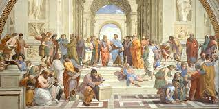

Renaissance
The Renaissance is a period in human history (between the 14th and early 17th century) when western Europe had to revive itself (as the name renaissance suggests, renaissance means rebirth in english) from a crushing instability after hundreds of years of strenght, caused by political, religious and demographic collapse. It's the transition between the middle ages and the modern world and it generated extraordinary social change... And lots of art. During this period, it emerged developments on the social status of men and woman, the importance of understanding and learning philosophy, literature, technology and science. It was also created an outlook on religion by the people because of the greater understanding of science and the questioning by philosophy.
Some of the most known art pieces are:
-
Leonardo da Vinci's "Mona Lisa"

Source of the image: link
Mona Lisa is today's most popular and expensive painting. The art piece, made by da Vinci in 1503, resembles a portrait of a Lisa del Giocondo, a noblewoman married at the time to the wealthy Florentine silk merchant Francesco del Giocondo. The painting bears semblance to Virgin Mary, which was at the time viewed as the ideal woman. Da Vinci used various techniques common during the Renaissance period, like aerial prespective and it affects the light based on the distance between the viewer and the object. As we can observe, the contrast of the background decreases, giving the impression that it's quite blurry. Another technique also used by Leonardo in Mona Lisa is sfumato, which makes the transition between colors incredibly smooth and gives an elusive rendering of her Lisa's face. Da Vinci himself described this technique as painting without lines, "in the manner of smoke".
-
Raffaello da Urbino's "School of Athens"
Source of the image: link
Raffaello's "School of Athens" pictures a group of various polymaths, philosophers, mathematicias, scientists, engineers and artists. It includes Plato, Aristotle, Pythagoras, Archimedes, Heraclitus, Leonardo da Vinci and Michelangelo, between others. The painting tries to describe to the viewer the true embodiment of the Renaissance, and the hunger for knowledge during the period. Raffaello's put Leonardo in the center of the painting, counting as a nice gesture since he learned how to paint with perspective from him.